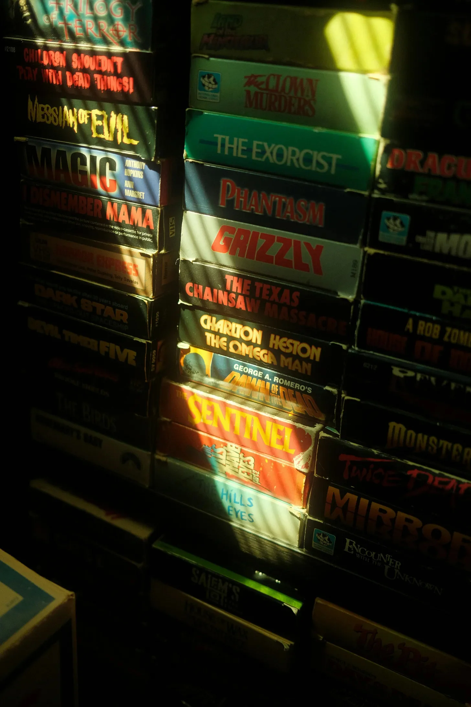

손전등 불빛이 먼지 쌓인 책등을 가로질러 흔들리며, 기괴한 카니발 호객꾼처럼 제목들을 비추었다. “아이들은 죽은 것들 가지고 놀면 안 돼!” 라고 진홍색 글씨로 적힌 글귀가 소리쳤다. “엑소시스트"는 병든 녹색으로 불경스러운 공포를 약속했다. "텍사스 전기톱 학살"은 핏빛 글씨체로 비명을 질렀고, 그 단어들은 빛바랜 플라스틱에서 거의 뚝뚝 떨어지는 듯했다. 그는 몸을 떨었고, 짜릿한 전율이 그의 등골을 타고 흘러내렸다. 바로 이거였다. 이것이 그의 유산이었다.
[The beam of the flashlight jittered across the dusty spines, illuminating titles like grotesque carnival barkers. "Children Shouldn’t Play With Dead Things!” shrieked one in crimson letters. “The Exorcist” promised unholy terror in sickly green. “The Texas Chainsaw Massacre” screamed in a blood-red font, the words practically dripping from the faded plastic. He shivered, a delicious thrill running down his spine. This was it. This was his inheritance.]
작은 마을에서 조용한 목소리로 속삭이던 그의 할아버지가 지난 주에 돌아가셨다. 사람들은 언덕 위의 낡은 빅토리아풍 집에서 이상한 불빛이 보인다고, 한밤중에 주문을 외우는 소리가 들린다고, 동물 제물과 더 나쁜 것에 대해 수군거렸다. 아무도 그곳 근처에 가려고 하지 않았다. 구급차가 인적 없는 거리를 따라 외로운 노래를 울부짖으며 지나간 후에도 말이다. 하지만 그는 두렵지 않았다. 그는 호기심이 많았다.
[His grandpa, a man whispered about in hushed tones in the small town, had passed last week. People muttered about strange lights in the old Victorian on the hill, about chanting in the dead of night, about animal sacrifices and worse. No one dared to go near the place, not even after the ambulance wailed it’s lonely song down the deserted street. But he wasn’t afraid. He was curious.]
이제 퀴퀴한 곰팡이 냄새와 잊혀진 물건들 속에서, 이 병적인 VHS 테이프 컬렉션에 둘러싸여 지하실에 서 있는 그는 노인과 이상한 연결 고리를 느꼈다. 어둠의 편, 밤에 쿵쾅거리는 것들에 대한 공통된 매혹.
[Now, standing in the basement amidst the musty smell of decay and forgotten things, surrounded by this morbid collection of VHS tapes, he felt a strange connection to the old man. A shared fascination with the dark side, with the things that went bump in the night.]
그의 손가락은 약간 떨리며 “그리즐리"를 꺼냈다. 커버는 피 묻은 송곳니를 가진 괴물 곰의 빛바랜 이미지였다. 그는 이것에 대해 들었던 것을 기억했다. 할아버지가 몇 주 동안 그것을 반복해서 재생하고, 그의 섬뜩한 웃음소리가 텅 빈 집에 울려 퍼졌던 것을. 지하실 구석에서 뱀 같은 쉿 소리가 들렸고, 그 소리는 그의 팔에 소름이 돋게 했다. 그는 손전등 불빛을 휙휙 돌렸고, 빛의 원은 정체된 공기 중에서 춤추는 먼지들을 비추었다. 아무것도 없었다. 그는 떨리는 숨을 내쉬며, 자신의 과민한 상상력을 탓했다.
[His fingers, trembling slightly, pulled out “Grizzly,” its cover a faded image of a monstrous bear with bloody fangs. He remembered hearing about this one, about how his grandpa would play it on repeat for weeks, his eerie laughter echoing through the empty house. A sibilant sigh from the corner of the basement, a sound that sent goosebumps erupting on his arms. He whipped the flashlight beam around, the circle of light catching dust motes dancing in the stagnant air. Nothing. He let out a shaky breath, blaming his overactive imagination.]
선반으로 돌아섰을 때, 그의 눈은 뒤쪽에 숨겨진 검은색 상자에 끌렸다. 라벨은 단순히 손으로 쓴 낙서였다: “보지 마시오.”
[Turning back to the shelves, his eyes were drawn to a plain black box tucked away in the back, its label simply a handwritten scrawl: “DO NOT WATCH.”]
장난스러운 미소가 그의 얼굴에 퍼졌다. 오, 할아버지. 할아버지는 항상 제 버튼을 어떻게 누르는지 아셨죠.
[A mischievous grin stretched across his face. Oh, grandpa. You always did know how to push my buttons.]
긴장된 흥분이 그를 통해 흐르면서, 그는 금지된 테이프를 잡았다. 플라스틱은 차갑고 이상하게 미끄러웠다. 다시 그 소리가 들렸는데, 이번에는 더 크고 가까웠다. 그는 그것을 무시하고 이미 계단을 올라가고 있었다. 거실에 있는 오래된 비디오 플레이어에 테이프를 넣고 싶어 안달이 났다. 재미있을 것 같았다.
[With a nervous excitement thrumming through him, he grabbed the forbidden tape, the plastic cold and oddly slick in his hand. The sound again, louder this time, closer. He dismissed it, already heading up the stairs, eager to pop the tape into the old VCR in the living room. This was going to be fun.]
그는 낡은 기계를 만지작거렸고, 버튼들은 오래되어 뻣뻣했다. 마침내 만족스러운 딸깍 소리와 함께 테이프가 들어갔다. 화면이 깜빡이며 살아났고, 마치 소용돌이처럼 지지직거리는 화면이 나타났다. 그는 소파에 기대앉았고, 기대감이 커져갔다.
[He fumbled with the ancient machine, its buttons stiff with age. Finally, with a satisfying click, the tape slid in. The screen flickered to life, static swirling like a vortex. He settled back on the couch, the anticipation building.]
그때, 소름 끼치는 비명 소리가 정적을 찢었고, 그 소리는 마치 텔레비전 자체에서 기어 나오는 듯했다. 그는 깜짝 놀라 램프를 넘어뜨렸고, 방은 거의 어둠에 잠겼다. 비명 소리는 계속되었고, 끔찍한 불협화음이었다. 그는 리모컨을 찾아 허둥지둥댔고, 그의 손가락은 매끄러운 플라스틱 위에서 미끄러졌다. 화면은 이제 볼 수 없는 이미지들로 가득 차 있었다.
[Then, a blood curdling shriek tore through the silence, a sound that seemed to claw its way out of the television itself. He jumped, knocking over a lamp, plunging the room into near darkness. The shriek continued, a horrific cacophony. He scrambled for the remote, his fingers slipping on the smooth plastic. The screen was now filled with unwatchable images.]
갑자기, 어둠 속에서 한 쌍의 눈이 나타나 그를 똑바로 응시했다. 고대의 통제된 분노로 가득 찬 걸걸한 목소리가 텔레비전에서 속삭였다. “죽은 것들을 가지고 놀지 말았어야지…”
[Suddenly, a pair of eyes emerged from the darkness, staring directly at him. A guttural voice, filled with ancient controlled rage, whispered from the television, “You shouldn’t have played with dead things…”]
얼음처럼 차갑고 비인간적으로 강한 두 손이 그의 머리를 꽉 잡았다. 하나는 그의 입을 막아 비명을 막았고, 그 힘은 너무 강해서 턱뼈가 항의하듯 삐걱거리는 것을 느꼈다. 다른 손은 마치 바이스처럼 그의 뒤통수를 잡고 있었다.
[Two hands, icy cold and inhumanly strong, clamped down on his head. One covered his mouth, stifling his screams, its grip so tight he felt his jawbone creak in protest. The other hand, like a vice, held the back of his skull.]
그는 몸의 모든 근육이 공포에 질려 꼼짝도 할 수 없었다. 두려움에 커진 그의 눈은 빨간 눈이 노려보는 텔레비전 화면에 고정되어 있었다. 썩은 꽃과 썩은 살갗 같은 역겨운 냄새가 공중에 가득했다. 그때, 쉰 목소리, 섬뜩한 목소리가 그의 귀에 대고 속삭였다. “쉬…”
[He couldn’t move an inch, every muscle in his body locked in terror. His eyes, wide with fear, remained glued to the television screen, where the red eyes glared. A sickly scent, like decaying flowers and rotting flesh, filled the air. Then, a voice, raspy and chilling, whispered directly into his ear, “Shhh…”]
갑작스러운 고통이 그의 목에서 폭발했다. 그는 마치 마른 나뭇가지가 무거운 부츠 아래에서 부러지는 것 같은 역겨운 으스러지는 소리를 느꼈다. 그의 목뼈의 섬세한 뼈가 산산이 조각나 척수를 절단했다. 목 피부가 팽팽하게 늘어나 살이 역겹게 찢어졌다. 그의 시야가 흐려지고 방이 미친 듯이 기울어졌다. 뇌로 가는 혈액 공급이 차단되자 메스꺼움이 몰려왔다.
[A searing pain exploded in his neck. He felt a sickening crunch, like dry twigs snapping under a heavy boot. The delicate bones of his cervical vertebrae shattered, severing his spinal cord. Neck skin stretched taut, the flesh tearing with a sickening rip. His vision blurred, the room tilting crazily around him. A wave of nausea washed over him as the blood supply to his brain was cut off.]
목이 졸린 듯한 꺽꺽거리는 소리가 그의 입술에서 흘러나왔다. 그의 머리가 옆으로 홱 꺾이며 그가 낼 수 있는 유일한 소리였다. 인간 해부학의 한계를 무시하는 부자연스러운 각도였다. 그가 마지막으로 본 것은 오래된 TV 위에 겹쳐진 자신의 모습의 기괴한 왜곡이었다.
[A strangled gurgle escaped his lips, the only sound he could manage as his head slumped sharply to the side, an unnatural angle that defied the limits of human anatomy. The last thing he saw was the grotesque distortion of his own reflection superimposed over the old tv.]